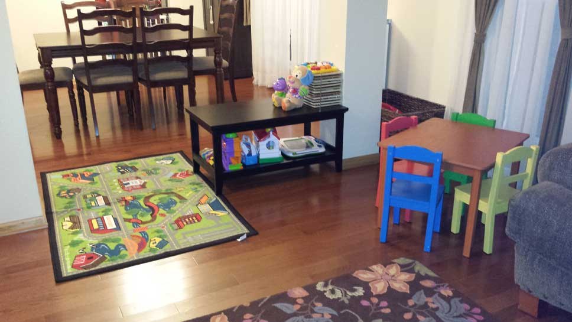
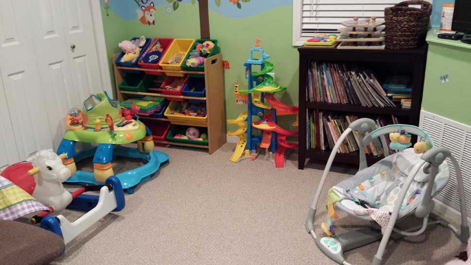
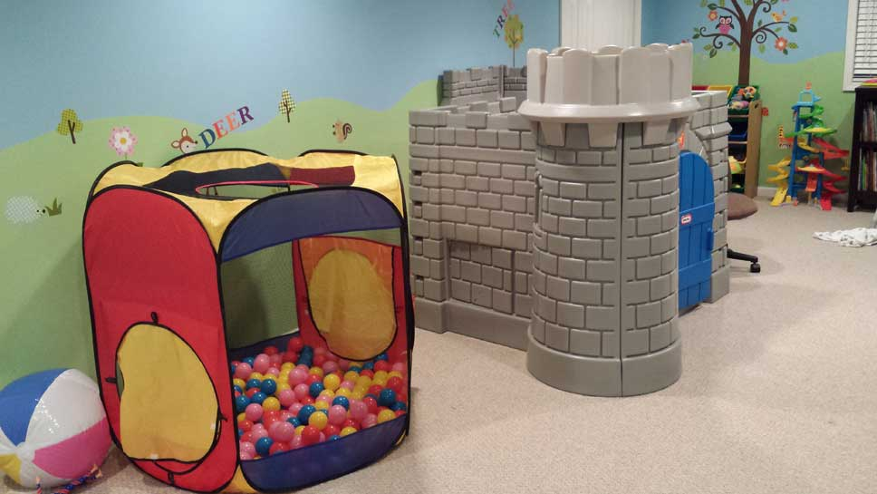
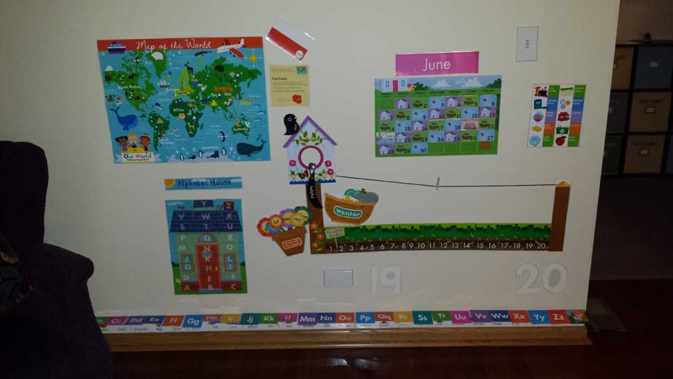

Wholesome Horizons Learning Center adheres to all of the safety and health standards required for licensing by the Department of Children and Family Services. The majority of household products used are environmentally (and health!) friendly.
We have a large basement playroom where children are free to explore the abundance of toys and participate in gross motor activities when weather does not permit outdoor play. We also have ample main floor space for play during drop off and pick up times. We have a large supply of arts and crafts materials for children to develop their artistic creativity, as well as developmentally appropriate toys for all ages to engage in imaginative play. We also have a variety of books, from cloth and board books for our youngest children, to young adult novels for our school-age crowd. We have a large fenced-in backyard with a swingset, sandbox, playhouse and climber, as well as ride on toys for the driveway. We use a driveway safety fence to prevent toys and children from venturing into the street.
There is a large open soccer field area directly across the street from our house which provides additional space for children to run and play, as well as several neighborhood parks within walking distance. Children are always directly supervised when outdoors.
   